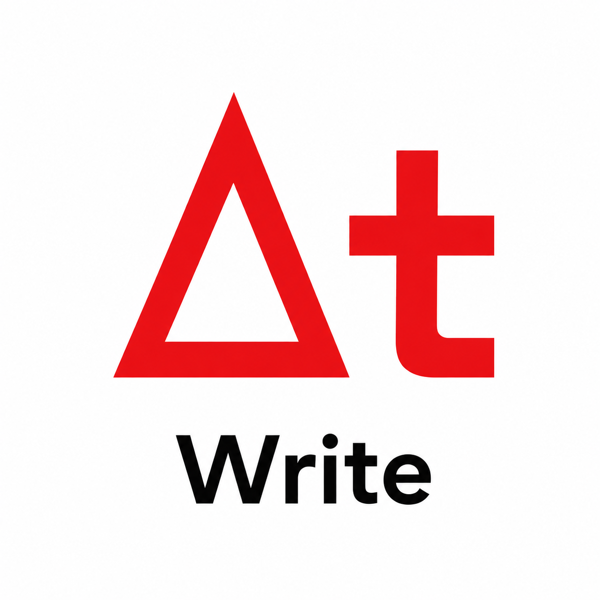

Tab troca o elemento. Enter avança de forma inteligente. Ctrl + Alt + 1–8 aplica estilos.
Versões automáticas são criadas durante a edição e em salvamentos manuais.
O navegador guardou uma cópia mais recente deste texto.
Defina o draft, a revisão e os dados usados na capa. O modo roteiro usa Courier 12 pt, fluxo inteligente de elementos e numeração opcional de cenas.
Escolha o formato. A exportação usa o conteúdo, as imagens e as configurações atuais do documento.